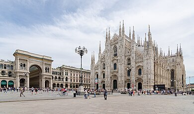

Milano (IPA: /miˈlano/ ascoltaⓘ; Milan[7] in dialetto milanese, [miˈlɑ̃ː][8][9] o [miˈlãː][10]) è un comune italiano di 1 372 580 abitanti,[4] capoluogo della regione Lombardia e dell'omonima città metropolitana, centro di una delle più popolose aree metropolitane d'Europa; è inoltre il secondo comune più popoloso d'Italia (dopo Roma) e rientra tra le venti città più grandi e popolose dell'intera Europa.
Fondata intorno al 590 a.C. da una tribù celtica facente parte del gruppo degli Insubri e appartenente alla cultura di Golasecca, fu conquistata dagli antichi Romani nel 222 a.C. Con il passare dei secoli, Mediolanum accrebbe la sua importanza sino a divenire capitale dell'Impero romano d'Occidente; nel 313 d.C. fu promulgato l'editto di Milano, che concesse a tutti i cittadini, quindi anche ai cristiani, la libertà di culto.
Dal XII fino al XVI secolo, Milano fu una delle più grandi città europee e un importante centro commerciale, divenendo così capitale del Ducato di Milano, che fu una delle maggiori forze politiche, artistiche e della moda nel Rinascimento.[11][12] All'inizio del XVI secolo, però, perse l'indipendenza a favore dell'Impero spagnolo per poi passare, quasi due secoli dopo, sotto la corona austriaca: grazie alle politiche asburgiche, Milano divenne uno dei principali centri dell'illuminismo italiano. Capitale del Regno d'Italia napoleonico, dopo la Restaurazione fu tra i più attivi centri del Risorgimento, fino al suo ingresso nel Regno d'Italia sabaudo.
Principale centro economico e finanziario della Repubblica Italiana, Milano ne guidò lo sviluppo industriale, costituendo con Torino e Genova il cosiddetto Triangolo industriale, in particolar modo durante gli anni del boom economico, quando la crescita industriale e urbanistica coinvolse anche le città limitrofe, creando la vasta area metropolitana milanese. In ambito culturale, Milano è il principale centro italiano dell'editoria ed è ai vertici del circuito musicale mondiale grazie alla stagione lirica del Teatro alla Scala e alla sua lunga tradizione operistica. È, inoltre, tra i principali poli fieristici europei (con due esposizioni universali ospitate: Expo 1906 e Expo 2015) e del disegno industriale, ed è considerata una delle capitali mondiali della moda.
Milano è una delle mete del turismo internazionale, infatti figura tra le quaranta città più visitate al mondo, attestandosi seconda in Italia dopo Roma e sesta nell'Unione Europea. Milano è considerata una città globale per il suo notevole impatto economico.